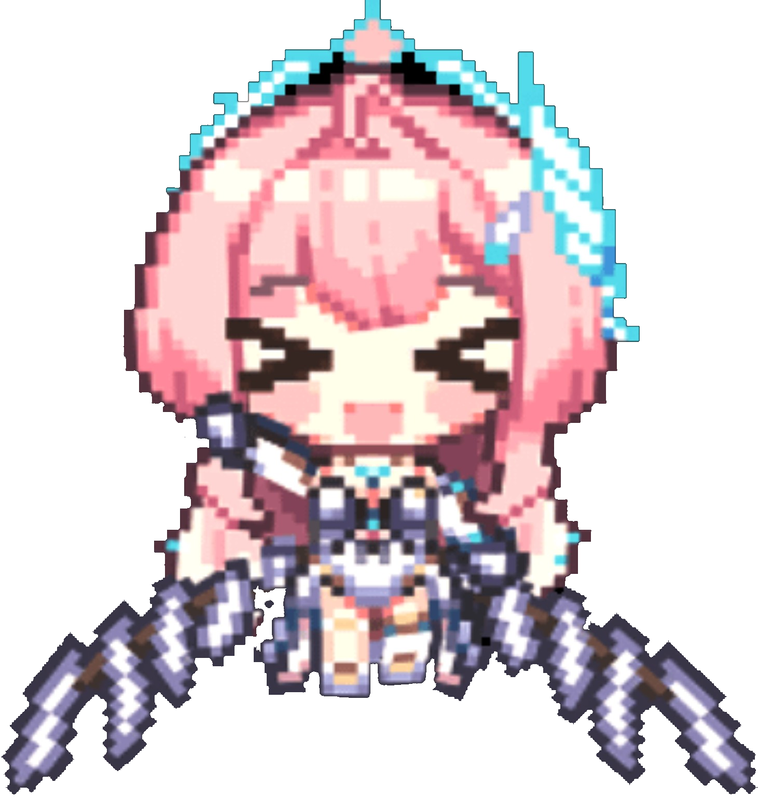

Open-World Exploration
Traverse a vast sci-fi landscape with fluid movement, wall-running parkour and freedom to explore Solaris-3.
A JOURNEY ACROSS SOLARIS-3
is a story-rich, open-world action RPG set on the post-apocalyptic planet Solaris-3, where a catastrophic event known as the Lament has fractured reality and unleashed monstrous, sound-based entities upon humanity. Players step into the shoes of Rover, a legendary amnesiac who awakens to a strange new world and possesses the unique ability to absorb and manipulate the frequencies of defeated enemies. Together with powerful companions called Resonators, players explore a vast sci-fi landscape, utilizing fluid wall-running parkour and engaging in lightning-fast, high-skill combat where capturing and transforming into monster "Echoes" is the key to reclaiming the future.

THE WORLD OF WUTHERING WAVES
Awaken as Rover and travel through Solaris-3, a world reshaped by the Lament. Meet Resonators, uncover lost memories, and discover the stories hidden throughout a vast open-world landscape.
Discover moreWHAT AWAITS YOU
Three elements that define the adventure across Solaris-3.
Traverse a vast sci-fi landscape with fluid movement, wall-running parkour and freedom to explore Solaris-3.
Engage enemies through quick, high-skill combat built around movement, timing and powerful Resonator abilities.
Absorb defeated enemies and transform into their Echoes, turning their frequencies into new powers for battle.